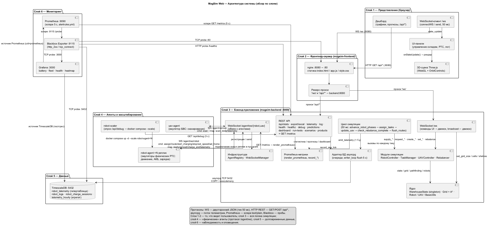
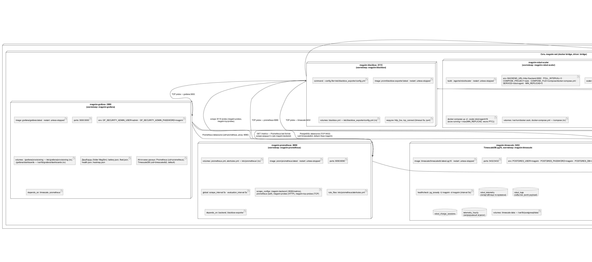

Склады работают на пределе: растёт поток заказов, дорожает персонал, а ошибки планирования обходятся дорого.
Онлайн-заказы растут каждый год — складам нужно быстрее комплектовать и отгружать больше позиций.
Подбор и удержание персонала дорожают; автоматизация перестаёт быть опцией и становится вопросом экономики.
Запуск роботов — крупные инвестиции. Ошибка планирования даёт простой оборудования и убытки.
Безопасный способ оценить алгоритмы и KPI автоматизации до покупки «железа» — цифровой двойник.
Без цифрового двойника эффект автоматизации непредсказуем, а процессы «не видны».
Частозапрашиваемые позиции лежат в глубине склада — каждый заказ занимает больше времени.
Застрявший робот обнаруживают вручную, иногда через часы — склад «стоит».
АКБ выходят из строя без предупреждения → внеплановые простой и замена дороже плановой.
Отсутствуют объективные цифры: скорость выдачи, загрузка роботов, окупаемость автоматизации.
Живая веб-модель склада, где RTS и БВС выполняют реальные бизнес-операции, а каждая операция измеряется метриками.
5 роботов по типам товара (металл, пластик, электроника, дерево, стекло). Задачи: размещение, выдача, ребалансировка.
Беспилотник распознаёт поставки без маркировки, определяет тип товара и направляет его на нужные полки.
A* маршрутизация, автономное назначение задач, батчинг до 5 единиц за рейс, обход препятствий и конфликтов.
Частозапрашиваемые товары автоматически подтягиваются ближе к зоне выдачи — короче каждый маршрут комплектации.
Товар с известным типом автоматически попадает в очередь: робот забирает его в зоне приёмки и размещает на полку по приоритету спроса.
БВС проводит сканирование в зоне приёмки, определяет тип товара, пополняет запас на полках — без ручного разбора.
Робот находит ближайшую полку с товаром, забирает и доставляет к выходу. Остаток компенсируется, склад сам пополняет запасы.
Периодическая оптимизация: товары с высоким спросом перемещаются ближе к выходу — сокращается средний маршрут выдачи.
Каждая метрика измерима в симуляции и переносится на реальный склад после внедрения.
| Показатель | Традиционный склад | С MagSim |
|---|---|---|
| Скорость выдачи заказа | Товар в глубине склада, маршрут сотрудника «на глаз» | A* + товары у выхода после ребалансировки |
| Простои роботов | Застревание замечают вручную, реакция — часы | Автодетекция за ~30 секунд и восстановление движения |
| Срок службы АКБ | Замена по отказу, внеплановый простой | Контроль деградации, прогноз ресурса, замена по состоянию |
| Пропускная способность | Доставка 1 позиции за рейс | Батчинг — до ёмкости робота за один рейс |
| Надёжность инфраструктуры | Ручной контроль сервисов и оборудования | Мониторинг 24/7, алерты, автоматические проверки |
| Отчётность для заказчика | Сводный Excel вручную | Автоматические дашборды и выгрузка отчётов |
Каждая операция фиксируется и попадает в дашборды: состояние флота видно в реальном времени и образует базу для отчётов заказчику.
Каждый робот: текущий заряд, скорость разряда, прогноз остаточного ресурса и время до подзарядки.
Ключевой SLA: от запроса клиента до доставки товара к выходу — среднее и по каждой задаче.
Размещение, выдача и ребалансировка за период; производительность парка по сменам и суткам.
Движение каждого РТС и контроль маршрута: видны «лишние» километры и узкие места полок.
Число инцидентов и время реакции: детекция ~30 секунд, робот самостоятельно продолжает маршрут.
Насколько равномерно заняты роботы и сколько единиц техники доступно в каждый момент времени.
Автоматизация убирает зависимость склада от смен, усталости и личного опыта сотрудников.
Парк работает всю неделю — 168 часов: нет смен, обедов, больничных, выходных и праздничных простоев.
Операция в 03:00 и в обед выполняется одинаково точно — скорость и точность не зависят от часа работы.
Алгоритм выполняет каждую операцию одинаково, без «личных приёмов» сотрудника. Новичков не нужно долго обучать.
БВС проводит инвентаризацию вместо ручного пересчёта, роботы переносят грузы — меньше ошибок и нагрузки на людей.
Система сама следит за флотом и инфраструктурой и сообщает о проблемах мгновенно.
4 панели: здоровье батарей, состояние флота (скорость, загрузка, задачи), здоровье стека и тепловая карта интенсивности движения.
Застрявший робот, критический заряд АКБ, деградация батареи, остановка цикла симуляции, недоступность сервиса, падение тестов — оповещение без участия человека.
Проверки доступности всех сервисов (HTTP/TCP-пробы) — бэкенд, фронтенд, база данных, панели мониторинга.
Телеметрия хранится в TimescaleDB: видно динамику АКБ, а прогнозы разряда помогают планировать обслуживание.
17 бизнес-сценариев и 8 модулей юнит-тестов проверяют ключевые процессы системы.
Поставки с меткой и без, выдача заказов, маршрутизация, ребалансировка, защита от переполнения полок, батарея, застревание, метрики Prometheus.
Батарея, сетка склада, поиск пути, метрики, робот, состояние, детекция застревания, менеджер задач.
Полный набор тестов выполняется каждые 10 минут в изолированном процессе, результаты видны в дашбордах.
Каждый сценарий подтверждает: бизнес-процесс работает и метрики достоверны — основание доверять расчётам ROI.
Веб-приложение: браузер (3D Three.js) → быстрый бэкенд на FastAPI → «физические» агенты-роботы → база телеметрии и мониторинг.

50 мс обновление состояния, двусторонние WebSocket-каналы, автоматическое масштабирование парка роботов в один клик.
Единый стек из 9 сервисов разворачивается командой docker compose up.

Быстрое развёртывание у заказчика, расширение склада в интерфейсе, проверка сценариев пиковых нагрузок без риска для производства.
Переносим карту, товары, потоки и ограничения заказчика в цифровую модель.
Проверяем пиковые сезоны, сбои, нехватку персонала и отказы оборудования.
Измеряем скорость выдачи, простои, загрузку и окупаемость автоматизации.
Проверенные алгоритмы переносятся на реальные роботы — без «сюрпризов» на действующем складе.